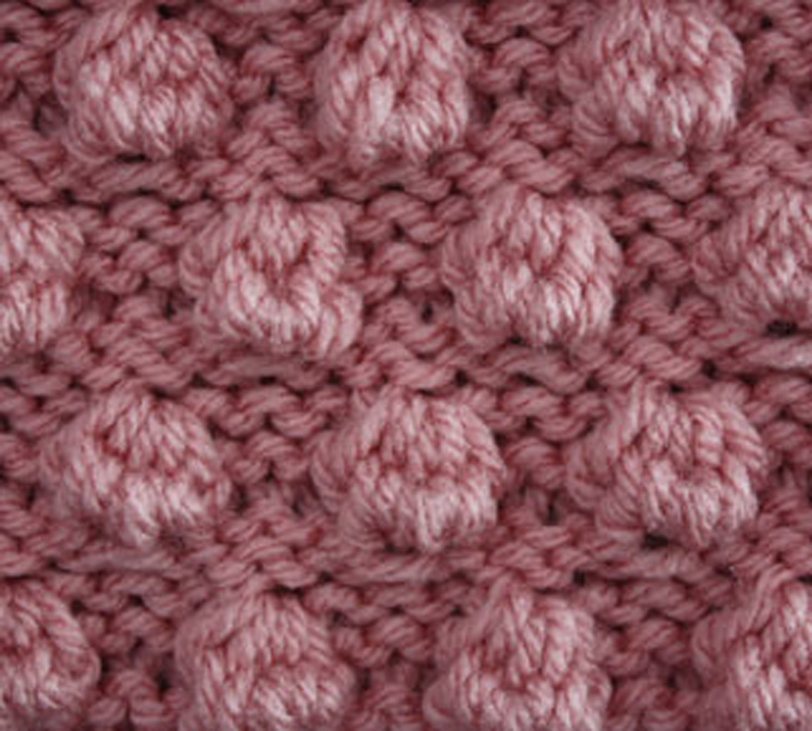
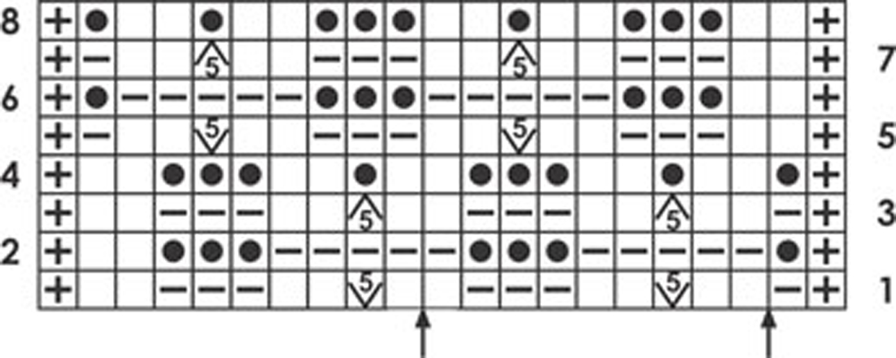
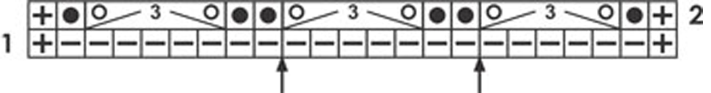

Row 1: edge st, p1, * m5 (k1, p1, k1, p1, k1 in the same st), p3;
repeat from * to last 5 sts, m5, p3, edge st
Row 2: edge st, k3, p5, * k3, p5; repeat from * to last 2 sts, k1, edge st
Row 3: edge st, p1, * k5tog, p3; repeat from * to last 9 sts, k5tog, p3, edge st
Row 4: edge st, knit across to last st, edge st
Row 5: edge st, * p3, m5; repeat from * to last 6 sts, p3, m5, p1, edge st
Row 6: edge st, k1, p5, k3, * p3, k1; repeat from * to last st, edge st
Row 7: edge st, * p3, k5tog; repeat from * to last 10 st, p3, k5tog, k1, edge st
Row 8: edge st, knit across to last st, edge st
Repeat rows 1 through 8.


Row 1 (WS): edge st, purl across to last st, edge st
Row 2 (RS): edge st, k1, yo, p5togm3, yo, * k2, yo,
p5togm3, yo; repeat from * to last 2 sts, k1, edge st
Repeat rows 1 through 2.